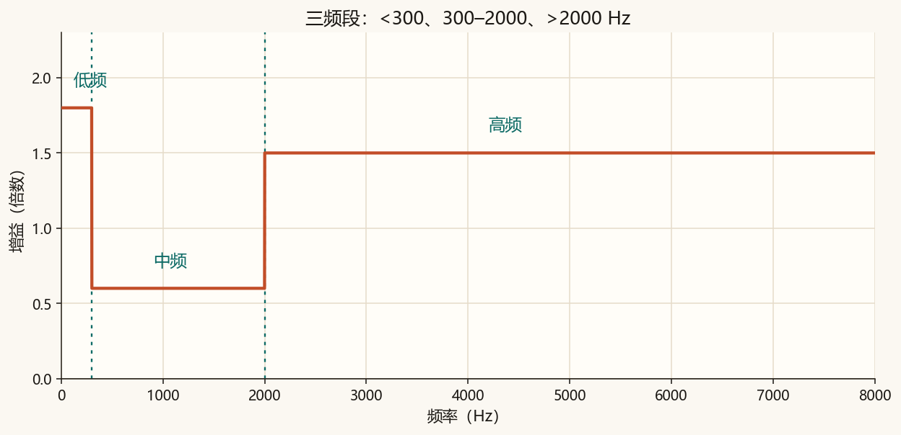
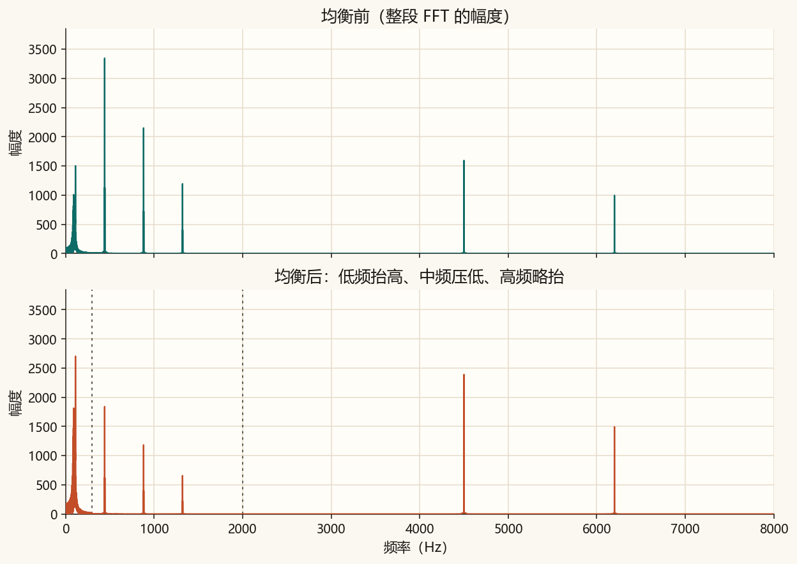
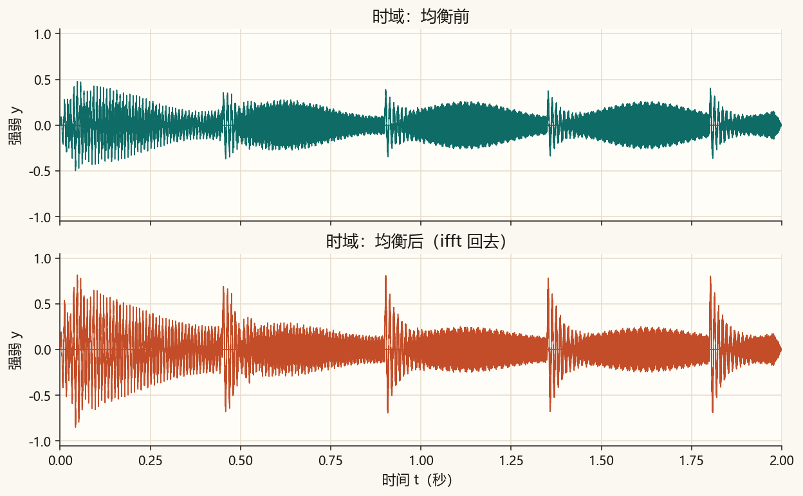
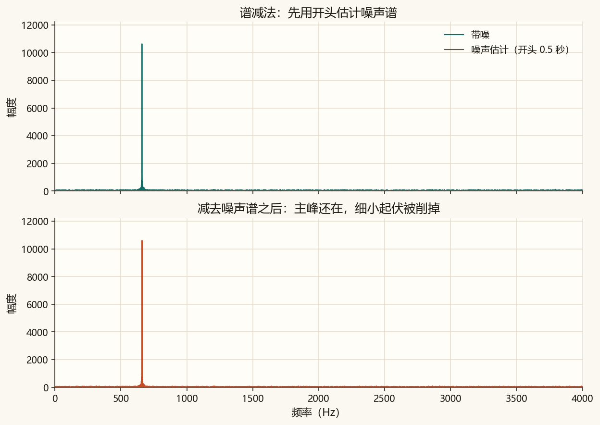
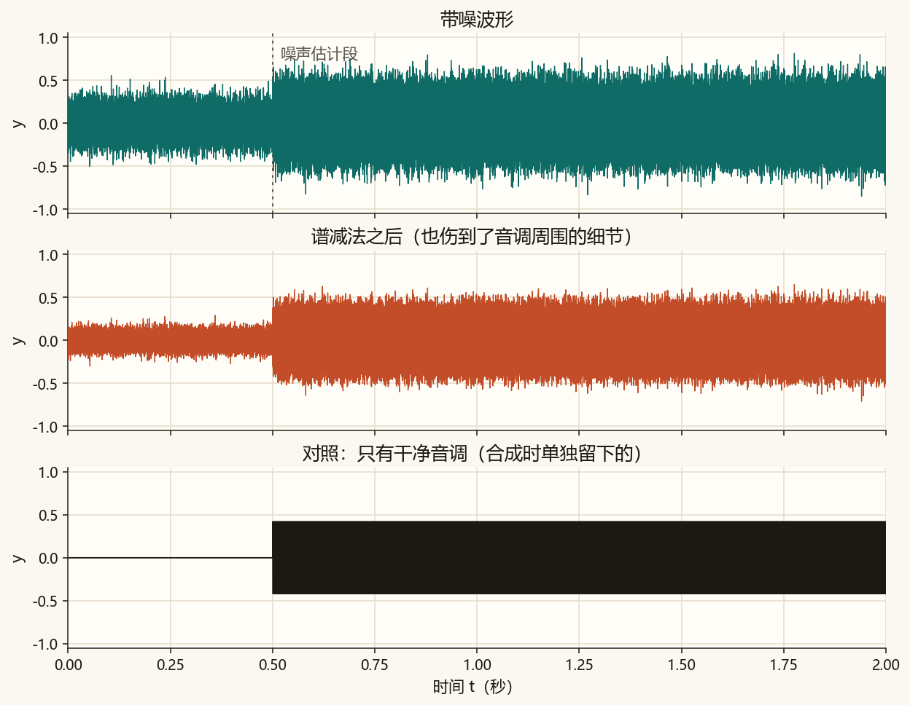
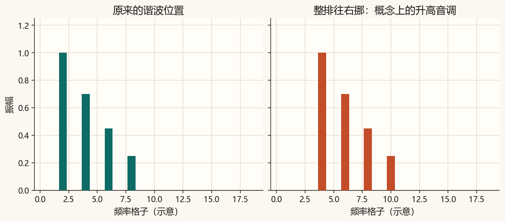
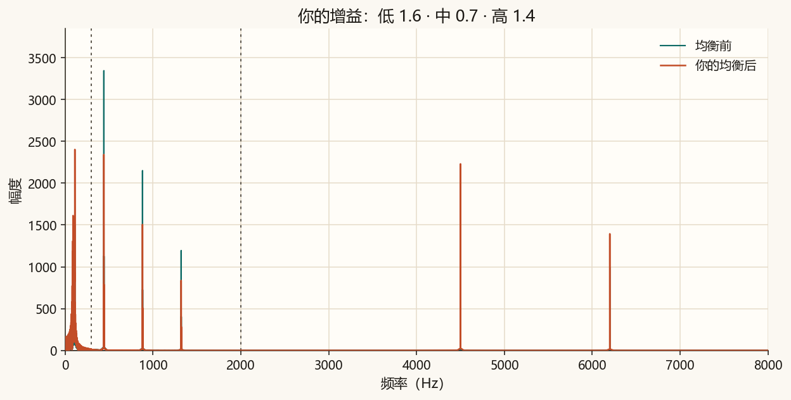

第 9 篇 · 改频谱再听回去 · 约 50 分钟
频谱不只是用来看的。这一篇在频率轴上乘不同的增益，再逆变换回波形：三段均衡改变音色；谱减法用开头半秒估计噪声——它能压噪声，也会削掉语音细节。变调只点到概念，不在本篇做完整声码器。
把整段声音做一次实数 FFT，得到每个频率格子上的复数。均衡器做的事很直接：按频段乘一个实数增益，再 ifft 回去。
Y(f) = G(f) · X(f) → y = irfft(Y)
本篇用三段：
增益是线性倍数：1 表示不动，0.5 表示幅度减半，2 表示加倍。



均衡前：
均衡后（抬低、压中、略抬高）：
若耳机里低频变「闷而沉」、中频人声变远、齿音略亮，就对上了图 9-2。
假设噪声比较稳，语音有时有、有时无。最简单的估计：用开头 0.5 秒（本篇合成音里几乎只有噪声）的幅度谱当噪声模板，从整段幅度谱里减掉，相位保持原样，再逆变换。
|Y| = max(|X| − α|N|, β|X|)
α 控制多减一点还是少减一点；β 留一点地板，避免幅度被减成完全为 0。

噪声谱不是一条完美的平线，语音也不是只占一根柱。相减时，落在噪声模板附近的语音细节会被一起削掉；减得太狠还会出现「音乐噪声」——听起来发干、有金属感或流水声。

带噪：
谱减之后：
对比时注意：噪声小了，音调是否也变「薄」了。
有人会想：把频谱整排往右挪，是不是就升高了音调？概念上，谐波间距变宽，基频感会升高。真要做得好听，还要处理相位、时长、共振峰是否跟着跑——那是声码器 / phase vocoder 的事。本篇只留一张示意，不做可听的完整变调。

下面用三根柱代表低、中、高。拖动增益，看哪一段变高变矮。这是示意，不是完整 FFT；改文件顶部的三个数才会重写你的 wav。
均衡的核心两行：
spectrum = np.fft.rfft(y)
out = np.fft.irfft(spectrum * gains, n=len(y))完整脚本在 code/ch09_effects.py。课文对照用的增益是固定的，不读文件顶部的三个数。
python code/ch09_effects.py终端里应出现「自检通过」，并提醒谱减法会伤细节。课文图是 ch09_eq_bands.png、ch09_eq_spectrum.png、ch09_eq_wave.png、ch09_denoise_spectrum.png、ch09_denoise_wave.png、ch09_pitch_teaser.png。ch09_eq_mine.png 与 ch09_eq_mine.wav 只跟随三段增益。
若终端中文是乱码，先执行 chcp 65001。图和 wav 照样会保存。
code/ch09_effects.py，把 GAIN_LOW 改成 0.3，GAIN_MID 改成 1.0，GAIN_HIGH 改成 1.0，运行。听 ch09_eq_mine.wav：低频应明显变弱。GAIN_LOW = 1、GAIN_MID = 1、GAIN_HIGH = 2.5：齿音/嘶声更亮。1.6、0.7、1.4，再运行一次。
你的声音：
三个增益请用 0.05 到 4 之间的数。
FFT 得到频谱 → 按低/中/高乘不同增益 → ifft（本篇用 irfft）变回波形。
用开头约 0.5 秒的幅度谱当噪声模板。语音细节落在噪声附近时会被一起削掉，还可能留下音乐噪声，所以听感发干、发金属。
不等于。那只是概念示意；好听的变调还要处理相位、时长和共振峰等，需要更完整的声码器算法。
声音是一维序列。图像是二维矩阵。下一篇对灰度图做二维傅里叶变换，看竖条纹、横条纹、斜条纹在频谱中央分别留下什么亮点。